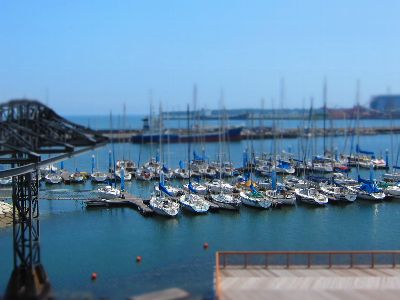
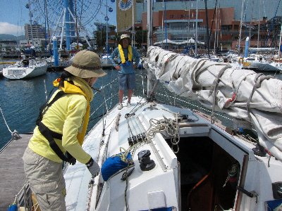
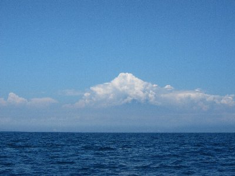

初夏のヨット駿河湾横断2/3 | 2011年7月 幹事：サムちゃん |
|---|---|
| 今回もサムちゃんのサムシング号でクルージングです！ 9時半に集合して、準備して、買い物して出発！今回は、サムちゃん、いづみさん、kusaさん、私の4名のみ。 | |
|  清水のヨットハーバー |  出発前の準備 |
| 清水港の沖防を過ぎて帆を張ります。強い南風をメインセールに受けて快調に伊豆方面（東）に進みます。ジブセールも張って推進力を増します。 最近、ちょっとは慣れたかと感じていますが、どうでしょうね。少しは役こなしているかな？ 以前はヨットって、帆に風を“受けて（入れて）”その風の推進力で進んでいるのかと思っていましたが、それだけじゃなく風を“流して”進んでいるということが分かりました。飛行機の翼の要領ですよね。帆を翼に見立て、翼で言う浮力を推進力に変えている。 ＞これ合ってますか？サムちゃん | |
 駿河湾真ん中ぐらい？ |  雲に隠れた富士山 |
| だから帆の表と裏側両方に風を流し、空気の密度差を生じさせているんですよね。そのための確認窓と吹き流しなんだと思ってます。 ヨットって奥が深いね。帆も単に張ればいいってもんじゃないし、風を受ける向き、張り具合(ぴんと張るか、ゆったり張るか）、それらを基本手元の各種ロープによって行われているんだ。 それらを駆使すると、風だけのエネルギーで、凄いスピードが出るんだよ。波を蹴立てて進む姿は恰好いいよ。 ヨット自体も毎回感心する事ばかり。一つ一つのパーツが考えられて配置・制作されている。設計する人ってすごいよね。 | |
 南からの風を受けております |  海の上でおにぎり。美味し！ |
| さて、今回のクルージングはタイトル通り駿河湾横断2/3です。伊豆に向かい約2時間。駿河湾を2/3ほど来たところでUターン。2/3と言うけれど、すでに伊豆・土肥が目と鼻の先ですよ。もう町並みが見えるぐらい。伊豆到達を果たしたかったけど、時間的に厳しいので断念。 風を受けて進むのは快適ですねー。エンジンの音とかないので、風と波の音だけ。降り注ぐ陽光を浴びながらお昼を食べて、気持ちいい〜♪ そんな感じで本日のクルージングは終了〜。いつか、クルージングしながら魚を釣ってみたいね。 | |
| 写真＆コメント ｂｙ べっしー | |